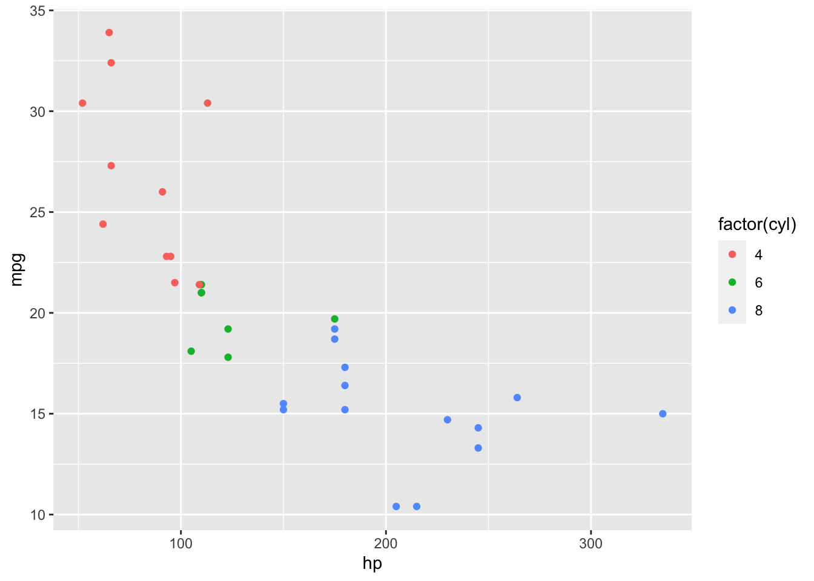
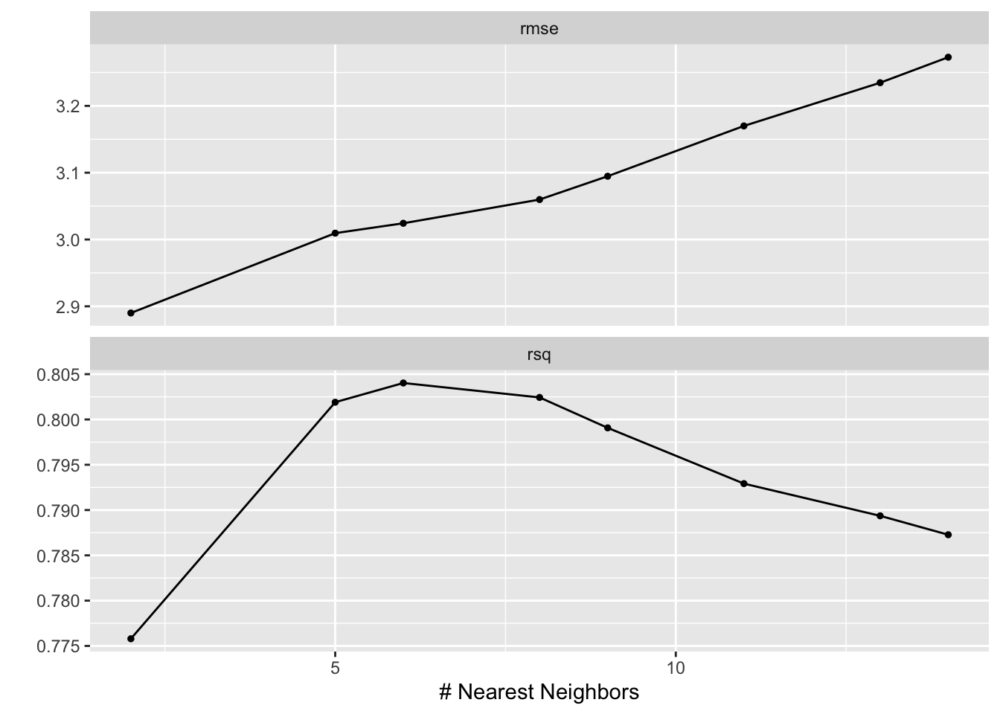
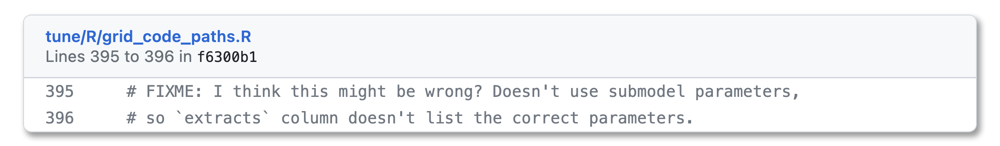

library(tidymodels)The setup
A familiar pastime—plotting mtcars:
ggplot(mtcars) +
aes(x = hp, y = mpg, color = factor(cyl)) +
geom_point()
The fuel efficiency of a car tends to drop off as the horsepower increases, and more cylinders tend to be associated with higher horsepower. Cozy.
Suppose we wanted to fit a machine learning model using all of the variables in mtcars to best predict the observed miles per gallon. I hear this is not a well-understood modeling problem.
form <- mpg ~ .We can make use of a nearest neighbors model, evaluating multiple values of neighbors against resamples to see which one results in the best performance. For a given value of neighbors n and a given observation i, the model finds the n observations in the training data with predictor values closest to i and takes their average to come up with a prediction for the mpg of i. A tidymodels model specification for this model looks like:
spec <- nearest_neighbor("regression", neighbors = tune())Marking the neighbors argument tune() tells the tune package to try out different values for n and see what happens.
We can pass these objects to tune to evaluate several values of n against resamples of the mtcars data:
set.seed(1)
res <-
tune_grid(
workflow(form, spec),
resamples = vfold_cv(mtcars, v = 3),
control = control_grid(extract = extract_fit_engine)
)We’ve passed tune_grid() three arguments:
The first argument is a workflow, combining the formula preprocessor
formwith the model specificationspec.The second argument,
resamples, defines a resampling scheme formtcars.1The third,
control, is sprinkled in for funsies. You wouldn’t need to include that argument in many tuning problems, but I’m doing so here to demonstrate something wacky later on.extract = extract_fit_enginetells tune to run theextract_fit_engine()function each time it fits a new model and return that along with the outputted results. For each fitted workflow—presumably, generated from fixingnand training the model—we want to extract the underlying engine fit. tidymodels doesn’t implement training routines for models ourselves, instead relying on modeling engines (in this case, the kknn package) to do so.
Okay.
res## # Tuning results
## # 3-fold cross-validation
## # A tibble: 3 × 5
## splits id .metrics .notes .extracts
## <list> <chr> <list> <list> <list>
## 1 <split [21/11]> Fold1 <tibble [16 × 5]> <tibble [0 × 3]> <tibble [8 × 3]>
## 2 <split [21/11]> Fold2 <tibble [16 × 5]> <tibble [0 × 3]> <tibble [8 × 3]>
## 3 <split [22/10]> Fold3 <tibble [16 × 5]> <tibble [0 × 3]> <tibble [8 × 3]>We gave a go at tuning this model! We can look at the metrics associated with each model fit to see how different values of numbers performed. Each column in res prefixed with a . has a collection function associated with it that binds together results in a convenient way. So, for .metrics, that’s collect_metrics():
collect_metrics(res) %>%
select(-.estimator)## # A tibble: 16 × 6
## neighbors .metric mean n std_err .config
## <int> <chr> <dbl> <int> <dbl> <chr>
## 1 2 rmse 2.89 3 0.240 Preprocessor1_Model1
## 2 2 rsq 0.776 3 0.109 Preprocessor1_Model1
## 3 5 rmse 3.01 3 0.396 Preprocessor1_Model2
## 4 5 rsq 0.802 3 0.0782 Preprocessor1_Model2
## 5 6 rmse 3.02 3 0.382 Preprocessor1_Model3
## 6 6 rsq 0.804 3 0.0796 Preprocessor1_Model3
## 7 8 rmse 3.06 3 0.402 Preprocessor1_Model4
## 8 8 rsq 0.802 3 0.0831 Preprocessor1_Model4
## 9 9 rmse 3.09 3 0.431 Preprocessor1_Model5
## 10 9 rsq 0.799 3 0.0853 Preprocessor1_Model5
## 11 11 rmse 3.17 3 0.495 Preprocessor1_Model6
## 12 11 rsq 0.793 3 0.0871 Preprocessor1_Model6
## 13 13 rmse 3.23 3 0.562 Preprocessor1_Model7
## 14 13 rsq 0.789 3 0.0866 Preprocessor1_Model7
## 15 14 rmse 3.27 3 0.596 Preprocessor1_Model8
## 16 14 rsq 0.787 3 0.0864 Preprocessor1_Model8Each row describes the results for a model configuration, .config. The thing that determines a model configuration in our example is the number of neighbors n. Each neighbor is associated with an out-of-sample error metric. Two different metrics, actually, because tidymodels is 😇👼😇.
A plot might be a bit more illustrative:
autoplot(res)
We tried out values for n ranging from 2 to 14. With respect to root mean squared error, at least, more neighbors meant more error.
Nice! Maybe a bit less cozy, but moderately so.
Off the deep end we go! Let’s use another collection function, collect_extracts(), to bind together the extracted objects:
collect_extracts(res)## # A tibble: 24 × 4
## id neighbors .extracts .config
## <chr> <int> <list> <chr>
## 1 Fold1 14 <trn.kknn> Preprocessor1_Model1
## 2 Fold1 14 <trn.kknn> Preprocessor1_Model2
## 3 Fold1 14 <trn.kknn> Preprocessor1_Model3
## 4 Fold1 14 <trn.kknn> Preprocessor1_Model4
## 5 Fold1 14 <trn.kknn> Preprocessor1_Model5
## 6 Fold1 14 <trn.kknn> Preprocessor1_Model6
## 7 Fold1 14 <trn.kknn> Preprocessor1_Model7
## 8 Fold1 14 <trn.kknn> Preprocessor1_Model8
## 9 Fold2 14 <trn.kknn> Preprocessor1_Model1
## 10 Fold2 14 <trn.kknn> Preprocessor1_Model2
## # ℹ 14 more rowsUm… not cozy! This output recycles the same neighbors value for every config. Buggy!🐛
For a while, we thought so too. This comment lived inside of our source code for years:

Embarrassing. I promise we don’t let bugs hang around that long, usually.
Except!!! Except… the feller need not be fixed. This output is right, kind of.
Submodels
In machine learning, on the way to fitting one model, we often end up training many.
For example, when training a nearest neighbors model with 5 neighbors, we need to take the average of the outcomes from the 5 closest points to the one we’re trying to predict. One way we could go about that is:
- calculating the distance of all the points in the training set to the one we want to predict,
- sorting by the distance, and then
- taking the average of the 5 points with the smallest distance.
1. and 2. are the hard parts. Note that 1. and 2., though, don’t care about the value of n. In the process of training that model for the 5 closest points, we did all of the work we’d need to do to find the 4 closest, or 2 closest, or 10 closest.
tidymodels takes advantage of this trick to quickly evaluate many models at once. Under the hood, tune_grid() just trains one model, with the value of neighbors with the highest n. Then, using that one model, we can easily generate predictions from all of the models with fewer neighbors and calculate metrics using those predictions. So, the submodel is a model configuration that we haven’t trained, per se, but are still able to generate predictions from. In res, we only trained the model configuration with 14 neighbors, and the rest are submodels.
Tuning with submodels
Okay, back to res. collect_metrics() associates each value of neighbors with a .config entry:
collect_metrics(res) %>%
select(-.estimator)## # A tibble: 16 × 6
## neighbors .metric mean n std_err .config
## <int> <chr> <dbl> <int> <dbl> <chr>
## 1 2 rmse 2.89 3 0.240 Preprocessor1_Model1
## 2 2 rsq 0.776 3 0.109 Preprocessor1_Model1
## 3 5 rmse 3.01 3 0.396 Preprocessor1_Model2
## 4 5 rsq 0.802 3 0.0782 Preprocessor1_Model2
## 5 6 rmse 3.02 3 0.382 Preprocessor1_Model3
## 6 6 rsq 0.804 3 0.0796 Preprocessor1_Model3
## 7 8 rmse 3.06 3 0.402 Preprocessor1_Model4
## 8 8 rsq 0.802 3 0.0831 Preprocessor1_Model4
## 9 9 rmse 3.09 3 0.431 Preprocessor1_Model5
## 10 9 rsq 0.799 3 0.0853 Preprocessor1_Model5
## 11 11 rmse 3.17 3 0.495 Preprocessor1_Model6
## 12 11 rsq 0.793 3 0.0871 Preprocessor1_Model6
## 13 13 rmse 3.23 3 0.562 Preprocessor1_Model7
## 14 13 rsq 0.789 3 0.0866 Preprocessor1_Model7
## 15 14 rmse 3.27 3 0.596 Preprocessor1_Model8
## 16 14 rsq 0.787 3 0.0864 Preprocessor1_Model8…and yet collect_extracts() associates all of those .configs with the same neighbors value:
collect_extracts(res)## # A tibble: 24 × 4
## id neighbors .extracts .config
## <chr> <int> <list> <chr>
## 1 Fold1 14 <trn.kknn> Preprocessor1_Model1
## 2 Fold1 14 <trn.kknn> Preprocessor1_Model2
## 3 Fold1 14 <trn.kknn> Preprocessor1_Model3
## 4 Fold1 14 <trn.kknn> Preprocessor1_Model4
## 5 Fold1 14 <trn.kknn> Preprocessor1_Model5
## 6 Fold1 14 <trn.kknn> Preprocessor1_Model6
## 7 Fold1 14 <trn.kknn> Preprocessor1_Model7
## 8 Fold1 14 <trn.kknn> Preprocessor1_Model8
## 9 Fold2 14 <trn.kknn> Preprocessor1_Model1
## 10 Fold2 14 <trn.kknn> Preprocessor1_Model2
## # ℹ 14 more rowsBoth of these are right, the second one maybe a bit more opinionated.
Remember that, to evaluate this model, tune only had to fit it once per resample. n = 14 was the largest value of n that we evaluated, so we just fit that model, then generate predictions for all of the models using that one fit, and then calculate metrics from those predictions. We thus have honest-to-god predictions and metrics from several models that we didn’t actually fit, directly at least. The .config entries in this case are associated with predictions.
How about the extracted objects, though? Since we only fitted one workflow, we call extract_fit_engine(x) on that one workflow, and that result applies to every model configuration. The .config entries in this case are associated with fits.
Metrics come from predictions, of which there are many. Extracts come from fitted models, of which there is only one.
Once we put a finger to what was going on here, the tidymodels team ultimately decided this is probably the right way to go about it, UI-wise. The output raises an eyebrow, though it really ought to. If a user extracts values from the fitted workflows assuming there really are several models fitted with different values of n, they may erroneously make conclusions about those extracted values. If a user does notice this effect, though, and concludes that it’s okay that the extracted values arise from the same models, the output looks exactly the way it would (other than hyperparameter values) if there were no submodel trick at play; all of the benefits of type stability apply.
Other Options
So, we ultimately opted not to make any changes to functionality here, just improving the documentation we have. Some other options we considered, labeled with the conclusions we ultimately came to about each of them:
Misleading
We could backtrack in the source code and make sure that every neighbors entry is paired with the .config entry it’s associated with elsewhere in the output. For example, the collect_extracts(res) results from above might look something like:
collect_extracts(res)## # A tibble: 24 × 4
## id neighbors .extracts .config
## <chr> <int> <list> <chr>
## 1 Fold1 2 <trn.kknn> Preprocessor1_Model1
## 2 Fold1 5 <trn.kknn> Preprocessor1_Model2
## 3 Fold1 6 <trn.kknn> Preprocessor1_Model3
## 4 Fold1 8 <trn.kknn> Preprocessor1_Model4
## 5 Fold1 9 <trn.kknn> Preprocessor1_Model5
## 6 Fold1 11 <trn.kknn> Preprocessor1_Model6
## 7 Fold1 13 <trn.kknn> Preprocessor1_Model7
## 8 Fold1 14 <trn.kknn> Preprocessor1_Model8
## 9 Fold2 2 <trn.kknn> Preprocessor1_Model1
## 10 Fold2 4 <trn.kknn> Preprocessor1_Model2
## # ℹ 14 more rowsThis would help the user in not needing to raise an eyebrow early on, but might obscure that there’s a little bit of tomfoolery going on here. If that user then goes on to process the extracted objects in some way, assuming that they really are fitted with the number of neighbors listed in the output, they might be led to incorrect conclusions.
Pain In The Ass
We could also backtrack and only return rows with the .config indicating the one model that was actually fit. For example:
collect_extracts(res)## # A tibble: 24 × 4
## id neighbors .extracts .config
## <chr> <int> <list> <chr>
## 1 Fold1 14 <trn.kknn> Preprocessor1_Model8
## 2 Fold2 14 <trn.kknn> Preprocessor1_Model8
## 3 Fold3 14 <trn.kknn> Preprocessor1_Model1This would probably raise a user’s eyebrow as quickly as our actual approach, and would be a reasonable way to go about this. At the same time, though, for an analyst who may then go on to join this output to other objects from the tuning results (like the collect_metrics() output), the specification of those joins changes depending on whether there are submodels present or not. Also, if that analyst determines that it is fine that the extracted object for a given .config arose from a different model fit, re-associating that extracted object with all of the configurations that it’s predictions are associated with elsewhere in output is a headache.
Slow
We could also, whenever a user indicates that they want to extract objects when using a tuning approach that involves submodels, ignore the submodel trick and move forward with “re-fitting” models we don’t necessarily need to. This would allow for totally type-stable output! Every row of extracted output does indeed correspond to a unique fitted workflow, and can be associated with the same .config and hyperparameters it would be elsewhere. This would be slooow though, and we like to go fast.
Cumbersome and buggy
We could also tamper with the fitted workflow to look like it’s a model fit that arose from a different set of hyperparameters, so that when users extract things from it, it walks and talks like output that would have arisen from approach 3. The trouble here, though, is that users can extract whatever they want from extracted objects, and there’s no way we could anticipate all the things they might want to extract and thus the “patches” we’d need to make to the object. Those patches could very well be as computationally expensive as re-fitting the workflow and extracting from it.
So, option zero it is. Raise the curious-looking thing, document it well, and become excited enough about software to write a blog post.
Happy modeling.🙂
Footnotes
It is a silly one! 3 folds is quite few—in practice, we’d recommend at least 5, and more if your data allows.↩︎